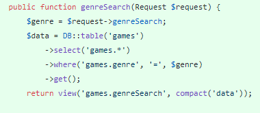
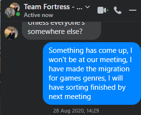

Sprint Two
Technical Achievements
-Game genres and sorting
For this sprint I was in charge of implementing the games genre systems as well as searching and displaying games based on their genres
To implement the games genres, I had to learn two different but connected aspects of the project, eloquent and mariadb phpmyadmin. Mariadb was the server that needed to be connected to. I had only used it for sql and not php which presented some new learning opportunitys Mariadb was needed as I had to be able to see if the genres I had added to the games migration had actually come through to the database. I was told by a team member how to link my local laravel work to the mariadb database, so there wasnt much individual learning needed for this. While this isn't our final planned database, I still found it interesting to learn about. Eloquent was a new skill I needed to learn as while I was expierenced at creating tables in sqlite, there were some major differences in the syntax used in eloquent. I used it to create the migration that made the genre table within the database, this then links to each game as a foreign key.
I used it to create the migration that made the genre table within the database, this then links to each game as a foreign key.
-Searching based on genre
This was a simple story to work through, as the bulk of the work for it was already finished. Having completed the migration and database setup, all that was needed to do to complete this was to link the genre as a foreign key to the games table and then add it to the html template used to render each game.
Personal Reflection
What did I do well this sprint?
My communication was once again good, I sent out messages to the group chat updating my team of the progress on my tasks and for example, letting my teammates know that I wouldnt be able to make it to our in person meeting
I completed all of my tasks assigned before the end of the sprint, and I improved on my sprint one performance in this regard as they were also all fully implemented and functional for the client meeting
What could I have done better?
I think I could have been more efficient with my time, as while I finished my tasks before the deadline, I could have finished them several days earlier if I had been motivated and then been able to help my teammates with their user stories as we had a few tasks this sprint that didnt get finished. If I apply this to future sprints, even to just be able to available if they have technical issues they need assistance with, then this should speed up our workflow, so I will aim to improve on this in future.
What lessons did I learn?
As I will mention in the barriers I encountered, a lesson I learned this week is that any form of break from my work mindset will likely cause me delays further down the line as I struggle to get back into gear after the break finishes. I will need to remind myself in future that maintaining a solid consistent work pace will prevent slow down in producing code later in the sprints as I wont have to switch out of a relaxing mode back into a work mindset. This will be particularly important with the approaching holidays.
What barriers did I encounter?
As we had dales day, we didnt have a second inclass session during the first sprint. Because of this, and having completed two of my tasks for the sprint in the first part of the week, I decided to take the weekend off from the project. This had a noticeable effect on my work come monday as I struggled to get back into a working mindset for the final task. So, I guess the barrier I encountered was my own brain this sprint, as it took several attempts at starting the last story to get it started properly and finished.